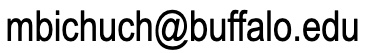

Maxim Bichuch
317 Mathematics Building
UB North Campus
Buffalo NY, 14260-2900
USA
Phone: (716) 645-8803
Fax: (716) 645-5039
Email: 
|
|
Teaching:
Fall 2022
MTH 458/558LEC
Mathematics Finance
Classes:
Tue, Thrs 12:30pm - 1:50pm, Frnczk 454.
Fall 2021
EN.553.627
Stochastic Processes and Applications to Finance
Classes:
Tue, Thrs 3:00pm - 4:15pm, Online.
Recitation: Section 01: Thrs
4:30pm - 5:20pm, Gilman 55.
Section 02: Thrs 12:00pm - 12:50pm,
Hodson 313.
Section 03: Thrs 6:00pm - 6:50pm, Shaffer 2.
Spring 2021
EN.553.628
Stochastic Processes and Applications to Finance II
Classes:
Mon, Wed 1:30pm - 2:45pm, Online.
Recitation: Section 01: Fri
10:00am - 10:50am, Online.
Fall 2020
EN.553.627
Stochastic Processes and Applications to Finance
Classes:
Tue, Thrs 3:00pm - 4:15pm, Online.
Recitation: Section 01: Thrs
4:30pm - 5:20pm, Online.
Section 02: Thrs 10:30am - 11:20am, Online.
EN.553.100
Introduction to Applied Mathematics and Statistics
Classes:
Tue 12:00pm - 12:50pm, Online.
Spring 2020
EN.553.428/628
Stochastic Processes and Applications to Finance II
Classes:
Mon, Wed 1:30pm - 2:45pm, Whitehead 304.
Recitation: Section 01: Fri
10:00am - 10:50am, Shaffer 302.
EN.553.100
Introduction to Applied Mathematics and Statistics
Classes:
Tue 12:00pm - 12:50pm, Whitehead 304.
Fall 2019
EN.553.427/627
Stochastic Processes and Applications to Finance
Classes:
Tue, Thrs 3:00pm - 4:15pm, Hodson 110.
Recitation: Section 01: Thrs
4:30pm - 5:20pm, Shaffer 2.
Section 02: Thrs 10:30am - 11:20am, Shaffer 202.
EN.553.100
Introduction to Applied Mathematics and Statistics
Classes:
Tue 12:00pm - 12:50pm, Whitehead 304.
Spring 2019
EN.550.622
Introduction to Stochastic Calculus
Classes:
Tue, Thrs 3:00pm - 4:15pm, Maryland 217.
Fall 2018
EN.553.427/627
Stochastic Processes and Applications to Finance
Classes:
Tue, Thrs 3:00pm - 4:15pm, Gilamn 132.
Recitation: Section 01: Thrs
4:30pm - 5:20pm, Ames 234.
Section 02: Thrs 12:00pm - 12:50pm, Ames 234.
Section 03: Thrs 12:00pm - 12:50pm, Bloomberg 276.
EN.553.100
Introduction to Applied Mathematics and Statistics
Classes:
Tue 12:00pm - 12:50pm, Whitehead 304.
Fall 2017
EN.553.427/627
Stochastic Processes and Applications to Finance
Classes:
Tue, Thrs 3:00pm - 4:15pm, Shaffer 100.
Recitation: Section 01: Thrs
4:30pm - 5:20pm,
Krieger 304.
Section 02: Thrs 12:00pm - 12:50pm,
Krieger 309.
Section 03: Thrs 10:30am - 11:20am, Hodson 211.
EN.553.100
Introduction to Applied Mathematics and Statistics
Classes:
Tue 12:00pm - 12:50pm,
Whitehead 304.
Spring 2017
EN.550.622
Introduction to Stochastic Calculus
Classes:
Tue, Thrs 3:00pm - 4:15pm, Gilman 219.
Fall 2016
EN.550.443
Financial Computing in C++
Classes:
Tue, Thrs 09:00am - 10:15am, Shaffer 303.
Recitation: Thrs 4:30pm -
5:20pm, Maryland 104.
Fall 2015
EN.550.443
Financial Computing in C++
Classes:
Mon, Wed 1:30pm - 2:45pm, Croft Hall G02.
Recitation: Thrs 4:30pm -
5:20pm, Croft Hall G02.
EN.550.622
Introduction to Stochastic Calculus
Classes:
Mon, Wed 12:00pm - 1:15pm, Latrobe 120.
Spring 2015
MA
572 Financial Mathematics II
Fall 2014
MA
571 Financial Mathematics I
Spring 2014
MA
572 Financial Mathematics II
Fall 2013
MA
571 Financial Mathematics I
Fall 2012
ORF
435 Financial Risk Management
Spring 2012
ORF
531 Computational Finance in C++
Fall 2011
ORF
535 Financial Risk Management
Spring 2011
ORF
531 Computational Finance in C++
Fall 2010
ORF 557 Stochastic Analysis Seminar: Markets with Transaction
Costs
Last update: November 11, 2022.